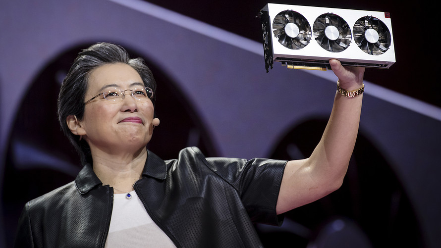

Volver
DRA. LISA SU
DIRECTORA EJECUTIVA Y PRESIDENTA DE AMD

Es una ingeniera eléctrica y ejecutiva comercial estadounidense nacida en Taiwán
En los inicios de su carrera comenzó trabajando para IBM y Texas Instruments, en 2012 comenzó a trabajar en AMD y posteriormente en 2014 fue nombrada presidenta y directora ejecutiva de dicha empresa